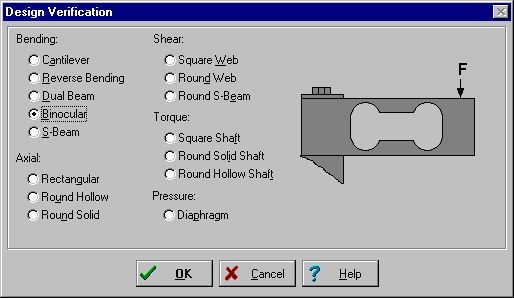
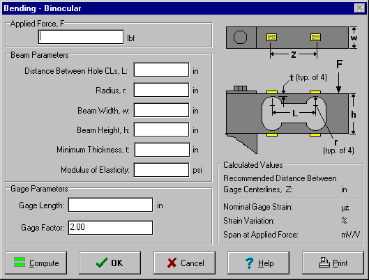
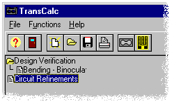

Step 4
Step 4Getting Started
Step 3
Design Verification
From the Design Verification DIALOG, select the Binocular RADIO BUTTON.

When the OK BUTTON is pressed, the Bending - Binocular DIALOG will appear.

For purposes of demonstration, suppose a conceptual design has the following parameters:
| Applied Force: | 20 lbf (88.96 N) |
| Distance Between Hole CLs, L: | 2 in (50.8 mm) |
| Radius, r: | 0.25 in (6.35 mm) |
| Beam Width, w: | 0.5 in (12.7 mm) |
| Beam Height, h: | 1.70 in (43.18 mm) |
| Minimum Thickness, t: | 0.1 in (2.54 mm) |
| Modulus of Elasticity: | 10E+6 psi (68.95 GPa) |
| Gage Length: | 0.060 in (1.524 mm) |
| Gage Factor: | 2.05 |
Enter each of the above values in the corresponding EDIT FIELDS, pressing the Tab key to move between EDIT FIELDS.
When all the values have been entered, press the Compute BUTTON to display the calculated values. For this example they should be:
| Nominal Gage Strain: | 1194 microstrain |
| Recommended Gage CL Distance | 2.02 in (51.308 mm) |
| Strain Variation: | 3.6% |
| Span at Applied Force: | 2.448 mV/V |
If the values are not correct, check each EDIT FIELD for the correct input value and press the Compute BUTTON again.
If the values are correct, press the OK BUTTON. The Bending-Binocular design calculation now resides in the Design Verification FOLDER. You can open it again at any time by double clicking the FOLDER.

Press the Circuit Refinements BUTTON, or double click on the Circuit Refinements OUTLINE ITEM.